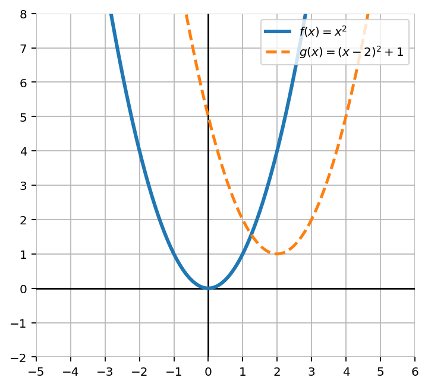
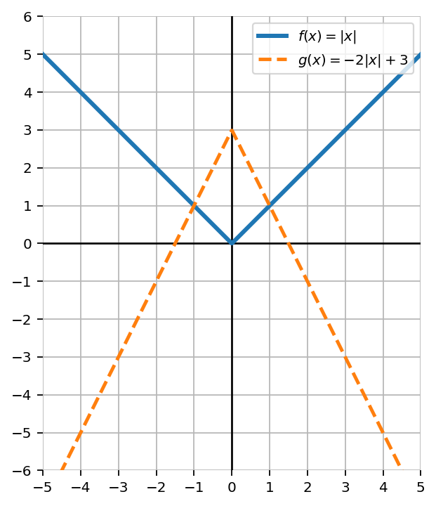
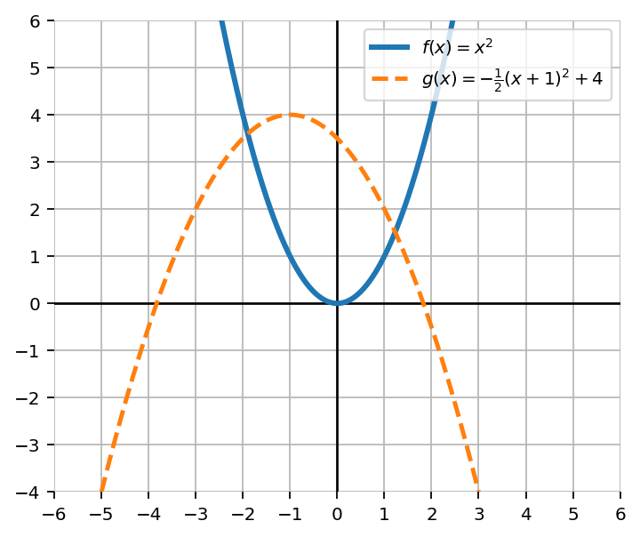
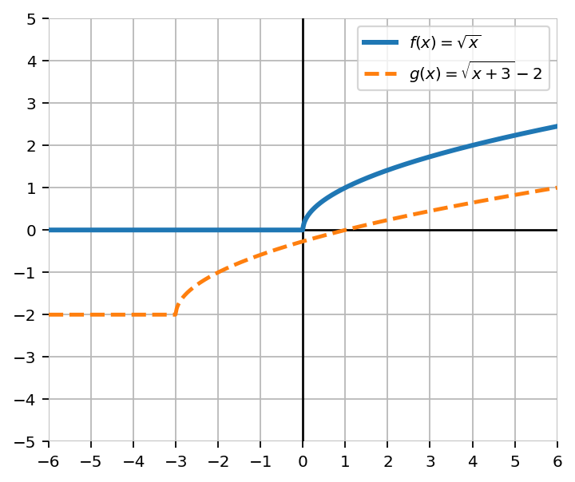

Mathematical idea: A transformation changes a graph in a predictable way. The equation tells us what changed; the graph helps us decide whether that change makes sense.
In this section, you will connect the structure of $a\cdot f(x-h)+k$ to shifts, reflections, stretches, compressions, and sketches of transformed parent functions.
Students will analyze and apply transformations of parent functions using the form $a*f(x - h) + k$.
I can statements
Later in this section, you will return to the task below. For now, do not solve it. Instead, annotate it individually. Circle anything familiar, underline symbols or directions that seem important, and write notes about what information you think will be needed.
As you annotate, ask yourself: What parent function is involved? What does each part of the equation change? Which features should move, flip, or stretch? How could the graph confirm the equation?
Future Task
A transformed function has the form
$$g(x)=a\cdot f(x-h)+k$$The graph of $g$ is related to the parent function $f(x)=|x|$. A student claims the graph was shifted right $3$, reflected across the $x$-axis, vertically stretched by a factor of $2$, and shifted up $5$.
Directions
Read the introduction aloud with a partner or in a small group. As you read, annotate the text by marking important ideas, circling key vocabulary, and writing short notes about connections, questions, or predictions in the margins.
Parent functions are simple graphs that act like starting points. The graphs of $x^2$, $|x|$, $\sqrt{x}$, and $x^3$ each have a recognizable shape and key features. Instead of plotting every point from scratch, we can use transformations to predict how the whole graph changes.
The form $a\cdot f(x-h)+k$ organizes those changes. The value of $h$ affects the input before the function acts, so it moves the graph horizontally. The value of $k$ is added after the function acts, so it moves the graph vertically. The value of $a$ changes the outputs, which can stretch, compress, or reflect the graph.
Transformations require careful reasoning because some parts feel backward. For example, $f(x-3)$ shifts a graph right, not left. This happens because the input must be $3$ larger before the inside of the function behaves the same way it did before. The equation and the graph should always tell the same story.
In this lesson, you will focus on how structure connects to graph behavior. You will describe transformations from equations, write equations from descriptions or graphs, and explain why different forms create different visual effects.
Stop and Discuss
The transformation form helps separate horizontal changes, vertical changes, and output changes.
$h$: shifts the graph horizontally. In $f(x-h)$, positive $h$ shifts right and negative $h$ shifts left.
$k$: shifts the graph vertically. Positive $k$ shifts up and negative $k$ shifts down.
$a$: changes the output values. It can reflect, stretch, or compress the graph vertically.
For each function, describe the transformation from $f(x)$ to $g(x)$.
Describe the transformation from $f(x)$ to $g(x)$.
Stop and Discuss
A horizontal or vertical shift moves every point on the graph the same distance. Key features such as a vertex, endpoint, or center point are especially helpful because they are easy to track.
The graph of $f(x)=x^2$ and $g(x)=(x-2)^2+1$ are shown.

Let $f(x)=|x|$. Write an equation for $g(x)$ if $f(x)$ is shifted left $4$ units and up $3$ units. Then describe what happens to the vertex.
The value of $a$ multiplies every output. When $a$ is negative, the graph reflects across the $x$-axis. When $|a|>1$, the graph is vertically stretched. When $0<|a|<1$, the graph is vertically compressed.
$g(x)=a\cdot f(x)$ changes the $y$-values of the parent graph. It does not directly move the graph left, right, up, or down.
The graph of $f(x)=|x|$ and $g(x)=-2|x|+3$ are shown.

Stop and Discuss
When writing a transformed equation, start with the parent function and place each transformation in the part of the structure where it belongs.
For $g(x)=a\cdot f(x-h)+k$, build the equation by asking:
Write an equation for the graph of $y=x^2$ shifted right $4$ units and up $1$ unit. Then explain how each part of the equation matches the description.
Let $f(x)=\sqrt{x}$. Write $g(x)$ if $f(x)$ is shifted right $7$ units and up $3$ units.
A graph can reveal the parent function, the new key feature location, and whether the graph has been reflected, stretched, or compressed.
Use the graph to write an equation for the transformed quadratic. Then justify each transformation using $a$, $h$, and $k$.

The graph of $f(x)=\sqrt{x}$ and a transformed graph are shown. Write a possible equation for $g(x)$ and explain how the graph supports your equation.

Stop and Discuss
Transformation errors often happen when students reverse horizontal shifts, ignore the value of $a$, or treat all numbers in an equation as shifts.
A student says $g(x)=f(x-5)$ shifts the graph left $5$ units because of the minus sign. Explain the error and give the correct transformation.
A student says $g(x)=-2f(x)+3$ only shifts the graph up $3$ units. Explain what transformation was missed and how it affects the graph.
Stop and Discuss
Use what you learned to revisit the task from the beginning of the notes.
A transformed function has the form $g(x)=a\cdot f(x-h)+k$. The graph of $g$ is related to the parent function $f(x)=|x|$. A student claims the graph was shifted right $3$, reflected across the $x$-axis, vertically stretched by a factor of $2$, and shifted up $5$.